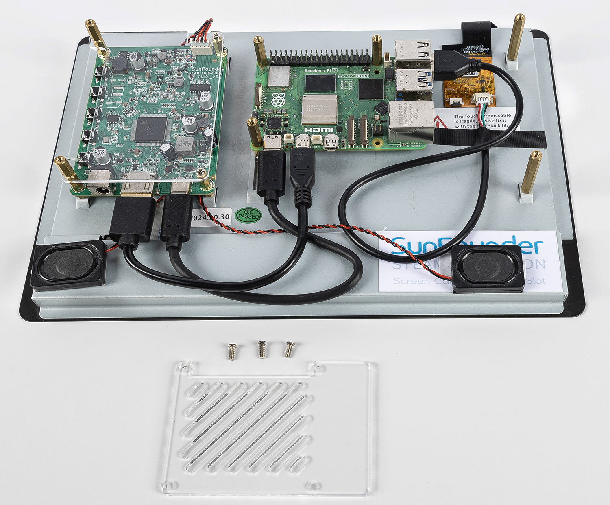
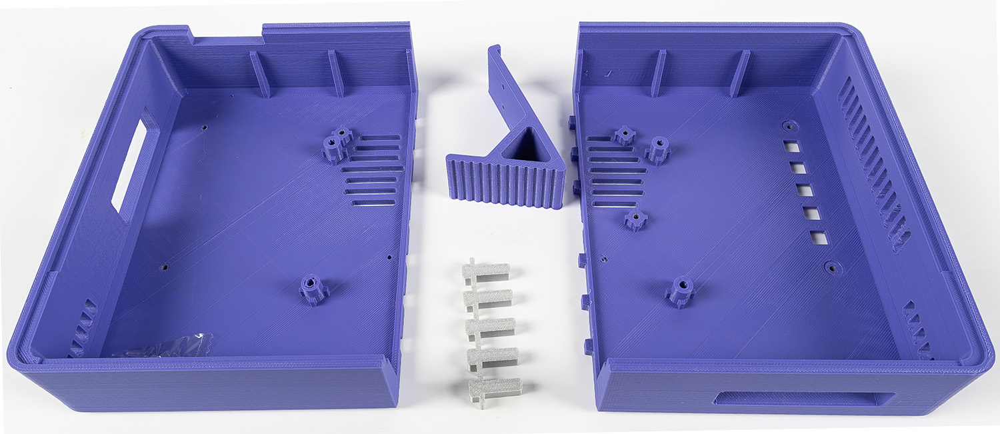
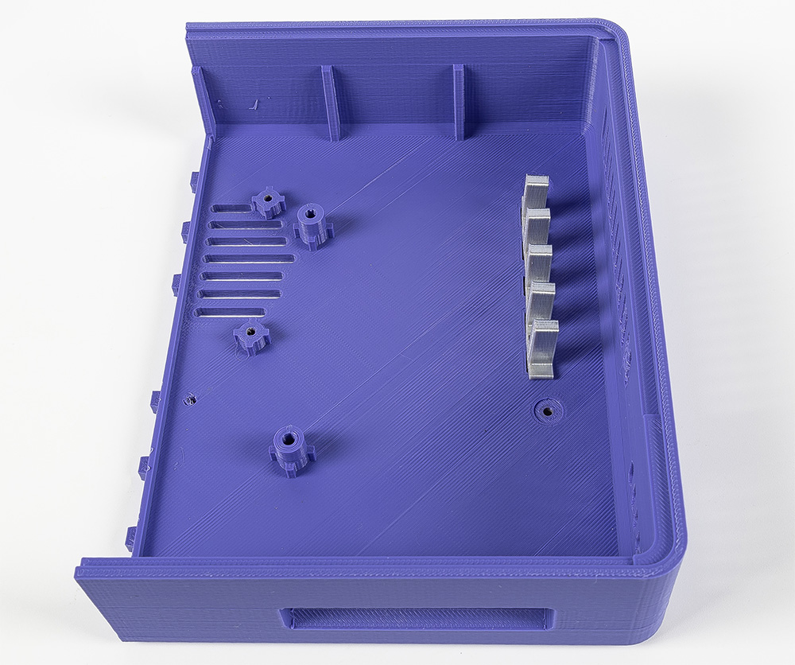
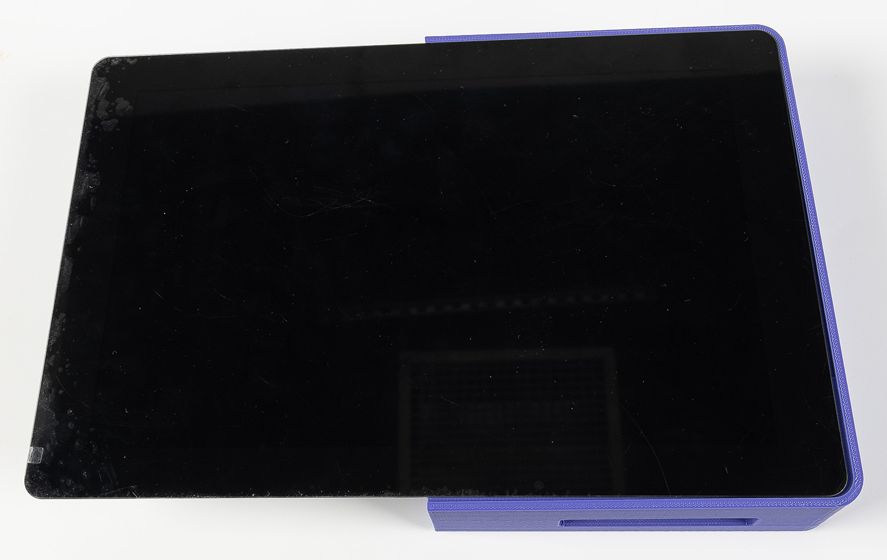
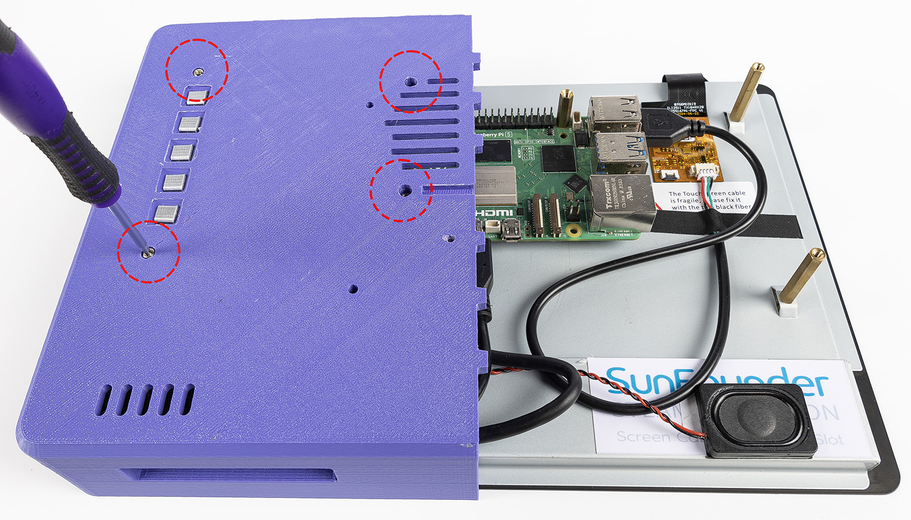
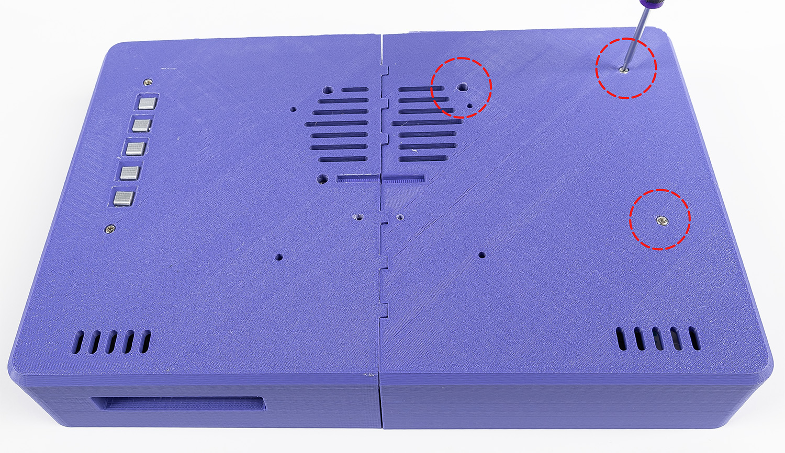
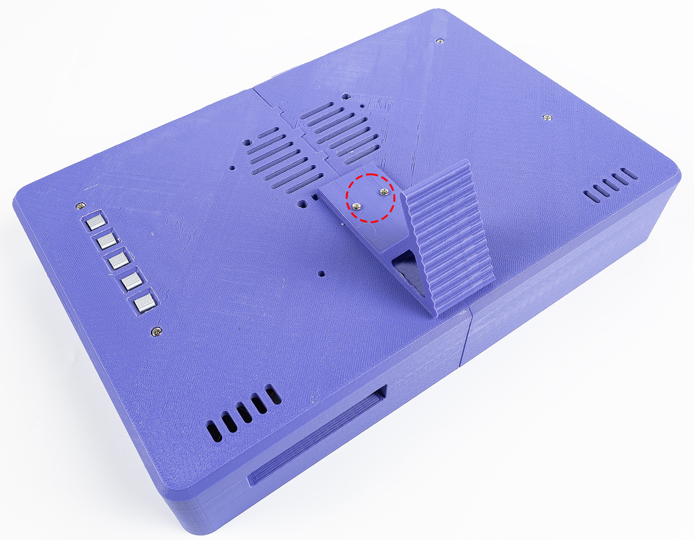
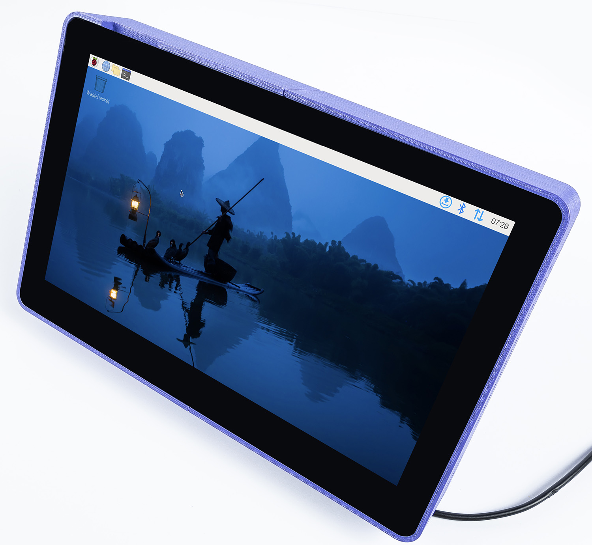

Note
Hello, welcome to the SunFounder Raspberry Pi & Arduino & ESP32 Enthusiasts Community on Facebook! Dive deeper into Raspberry Pi, Arduino, and ESP32 with fellow enthusiasts.
Why Join?
Expert Support: Solve post-sale issues and technical challenges with help from our community and team.
Learn & Share: Exchange tips and tutorials to enhance your skills.
Exclusive Previews: Get early access to new product announcements and sneak peeks.
Special Discounts: Enjoy exclusive discounts on our newest products.
Festive Promotions and Giveaways: Take part in giveaways and holiday promotions.
👉 Ready to explore and create with us? Click [here] and join today!
3D-PRINTED CASE INSTALLTION GUIDE
If you need to place the touch screen in a more convenient position, you can use a 3D printer to create a custom case. Below is a step-by-step guide to assembling the 3D-printed case, along with detailed descriptions and accompanying images.
We have provided the 3D printer files for this project:
Download the 3D Printer Files:
3D Printer File
First, carefully remove the acrylic cover from the Raspberry Pi.

After printing the provided files, ensure that all the 3D-printed parts are clean and free from debris. The printed set should include multiple plates, a back cover(2 half), a support stand, and button inserts.

Place the button components into the plate with slots.

Place the 10.1 inch screen into the designated slot on the case. Ensure it fits snugly and aligns with the edges.

While holding the screen and case together, flip the assembly over carefully. Ensure that the button inserts remain in their positions. Use four M2.5x6 screws to secure the case.

Align the second half of the 3D-printed case with the back cover. Snap it into place gently and secure it with three M2.5x6 screws. Ensure all screws are tightened evenly to avoid misalignment.

Snap the support stand onto the back of the case. Secure it with two M2.5x6 screws. The stand will allow the display to remain upright at an ideal viewing angle.

Once all components are securely fastened, flip the assembled unit to its upright position. Verify that the screen is at a comfortable viewing angle and that all parts are stable.

{kind=link}
{kind=link}
{kind=link}
{kind=link}
{kind=link}
{kind=link}
{kind=link}
{kind=link}
Notes
Ensure you have all necessary screws (M2.5x6) and tools, such as a small screwdriver, before starting the assembly process.
Handle the touchscreen and 3D-printed parts with care to avoid damage.
If any 3D-printed parts are not fitting as expected, double-check the print dimensions and clean up any excess material.
With this 3D-printed case, your Raspberry Pi touchscreen can now be positioned conveniently and securely for a better user experience.